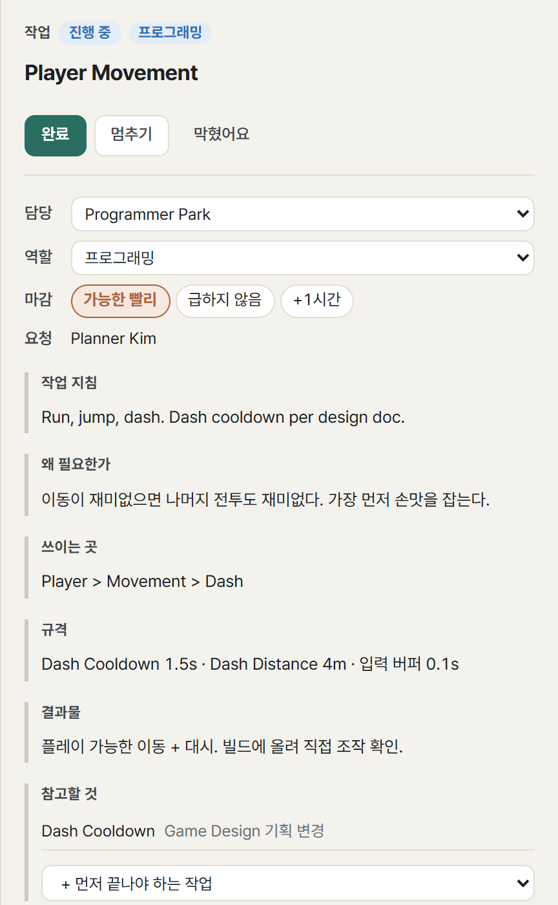
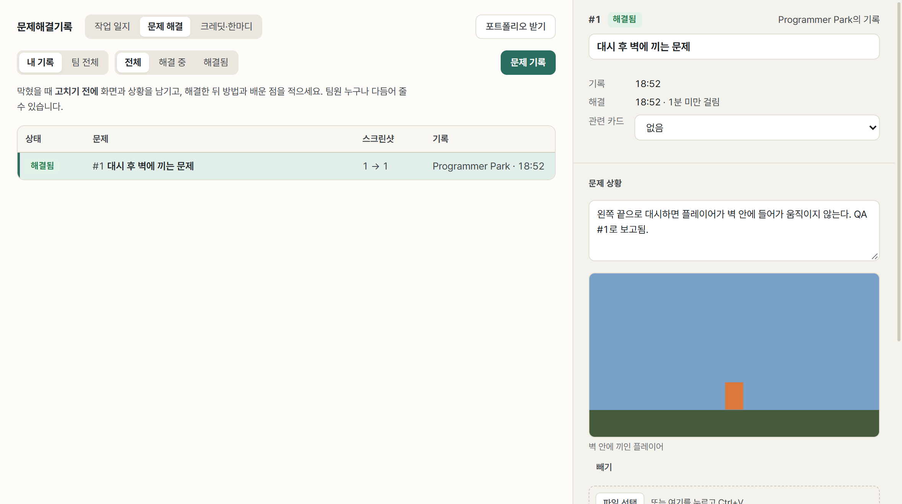
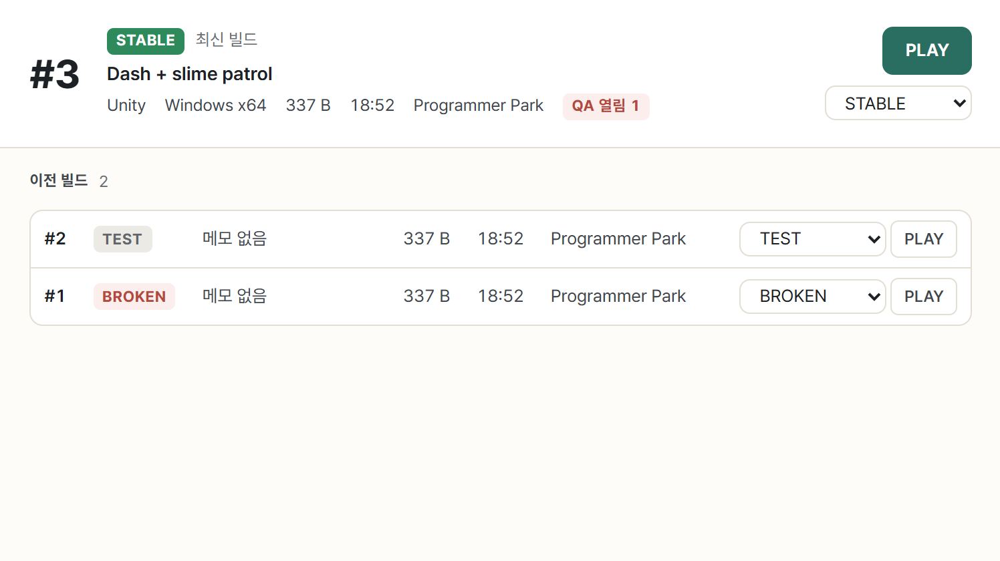
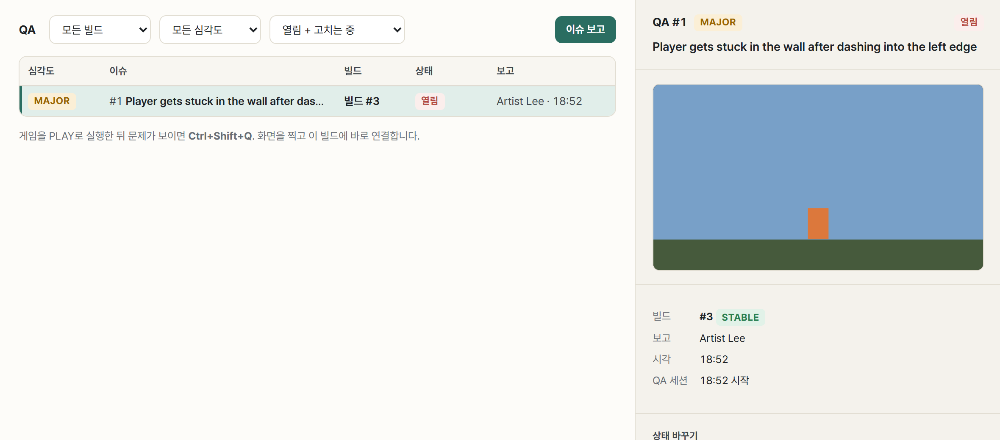

프로그래머
그림과 수치를 Unity로 받아 연결하고, 빌드를 올려 팀 전원이 바로 플레이하게 합니다.
시작
- 같은 Wi-Fi에서 방 코드로 참가하고 역할 프로그래밍을 고릅니다.
- 설정 → Unity 연동에서 Unity 프로젝트 폴더를 한 번 지정합니다. 에셋은
Assets/GameJamSync아래로 들어갑니다.
기획 이해
- 회의 뒤 기획에서 기획서, 도식, 밸런스 표를 봅니다. 기획서가 바뀌면 알림이 오고, 바뀐 점에서 차이만 확인합니다.
- 수치는 데이터 화면의 표에 있고, 엔진용 JSON으로 받습니다.
카드 집기와 아트 요청
- 작업 보드에서 카드를 시작해 ‘진행 중’으로 옮깁니다. 진행 중은 한 사람에 한 장입니다.
- 필요한 그림이 있으면 직접 에셋 슬롯을 만듭니다. 이름(
boss.attack), 쓰이는 곳, 대략 크기를 적으면 아트 보드에 카드가 생깁니다.


작업 ↔ 연동 (반복)
- 아티스트가 그림을 올리면 ‘에셋 준비됨’ 알림이 옵니다. Unity에 반영 한 번이면 같은 경로로 들어가고
.meta가 유지되어 참조가 깨지지 않습니다. - 크기가 대충 맞지 않으면 엔진에서 맞추세요. 허브는 막지 않습니다.
- 기획자가 수치를 고치면 데이터 업데이트로 JSON이 갱신됩니다.
- 막히면 막혔어요로 팀에 알립니다.
막혔을 때 → 문제해결기록
- 고치기 전에 Alt 0 → 문제 기록. 화면 캡처(3초 뒤)나 붙여넣기로 스크린샷을 넣고 상황을 한 줄 적습니다.
- 고친 뒤 해결 방법, 해결 화면, 배운 점을 적고 해결 완료. 도와준 사람을 고르면 그 사람의 포트폴리오에도 들어갑니다.


빌드 → 플레이 → QA
- 빌드 폴더를 올리면 팀 전원에게 알림이 갑니다. 파일 단위로 저장해 두 번째 빌드부터는 바뀐 파일만 오갑니다.
- 팀원은 PLAY 한 번으로 받아 실행하고, 게임 중 Ctrl Shift Q로 스크린샷과 함께 보고합니다.
- 빌드 상태: TEST, STABLE(플레이용 확정), BROKEN, FINAL(최종).




틈틈이 기록
- 카드 밖에서 한 일(통합, 디버깅, 조정)은 작업 일지에 한 줄씩 남기세요. 3시간 동안 없으면 한 번 알려 줍니다.
마감
- 최종 빌드를 FINAL로 표시합니다.
- 크레딧을 적고, 포트폴리오 받기로 맡은 일·하이라이트·문제 해결·팀원 평가를 받습니다.
AI와 함께
왼쪽 메뉴 AI에서 Codex·Claude Code를 연결합니다. 도구 묶음은 프로그래밍.
| 언제 | AI에게 | 사용량 아끼기 |
|---|---|---|
| 회의 직후 | “기획서 보고 내 카드 만들어 줘” | 새 대화로 시작 |
| 작업 중 | “규격이 빈 카드만 보여 줘” | 범위를 좁혀서 |
| 버그 수정 후 | “방금 고친 것 문제 해결 기록 초안 써 줘” 준비 중 | 끝나면 대화 닫기 |
| 하루 끝 | “오늘 한 일 정리해 줘” 준비 중 | 작은 모델 |